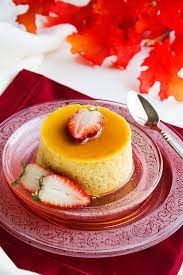

lecheflan
LECHE FLAN

DESCRIPTION
Leche Flan is a popular dessert in the Philippines,
it is from the same family of cream caramel, crème Brule, and custard.
The only downside of leche flan is the fact it’s too sweet and too thick and has just so many egg yolks.
Ingredients
- 3 large eggs + 1 yolk
- ⅓ cup sugar
- ¾ cup sweetened condensed milk
- ¾ cup evaporated milk
- 1 ½ teaspoon vanilla
Instructions
- In a saucepan, add sugar and two tablespoon of water. Cook the sugar until dark golden, remove immediately from heat and pour into four ramekins. The ramekins should take around ½ cup liquid.
- In a bowl, add the eggs and vanilla, whisk for two minutes. Add the condensed and the evaporated milk and mix well.
- Strain the mixture through a strainer while pouring it into the ramekins.
- Place the ramekins in a large and deep baking pan. Fill the baking pan with water until it reaches half the ramekins.
- Bake the leche flan in a preheated oven of 375F/190C for 25 minutes or until a toothpick inserted in the middle comes out clean. It’s better to check on the flan every 10 minutes to avoid overbaking.
- Cool the flan completely then refrigerate for at least an hour before serving.
- To serve it on a plate, run a butter knife around the edges of the flan, then inverted in your serving plate.